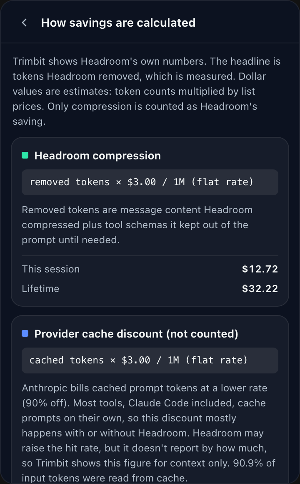
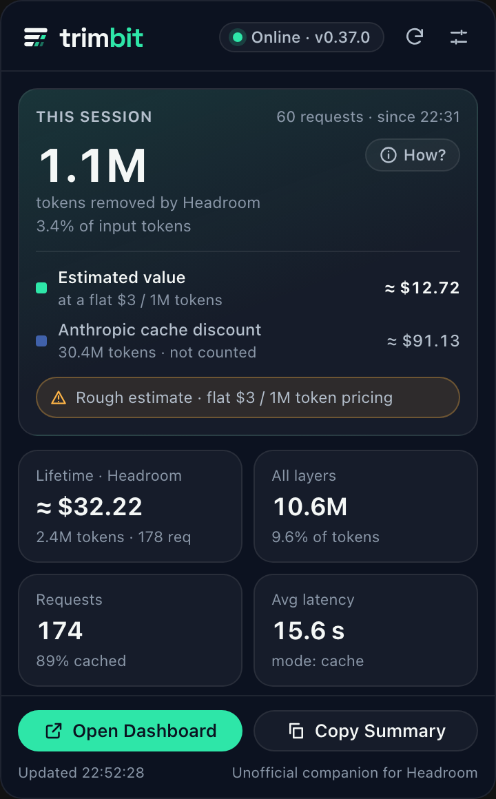
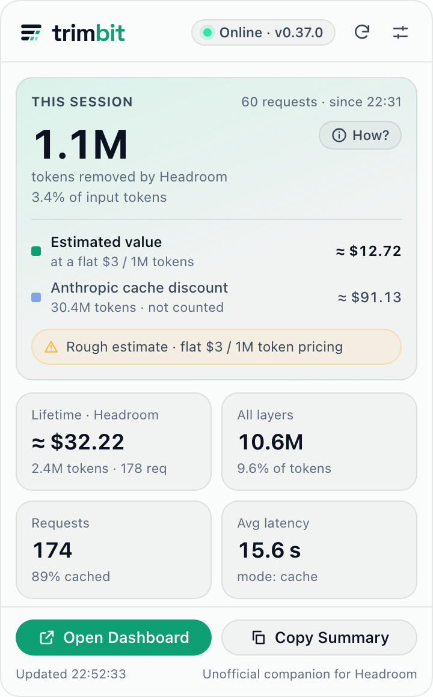

Tokens removed, live
The headline is what Headroom actually measures: tokens it kept out of your prompts, this session and lifetime.
Unofficial companion for Headroom
Trimbit reads your local Headroom proxy and shows the tokens it removes, live. Dollar figures are honest estimates, clearly marked. Native on macOS, Windows and Linux.
Free and open source · Apache-2.0



The headline is what Headroom actually measures: tokens it kept out of your prompts, this session and lifetime.
Every dollar figure is marked ≈ and explained. The provider's cache discount is shown for context, never counted as Headroom's.
Liquid Glass on macOS 26, Fluent Acrylic on Windows, a clean opaque panel on Linux. A 2 MB app, not a browser.
Talks only to a proxy on your own machine. No accounts, no telemetry, and it never reads the credentials in Headroom's stats.
Online, degraded or offline at a glance. When the proxy stops, the last known data stays on screen, marked as stale.
Short or exact numbers, what the menu bar shows, refresh interval, port, notifications and launch at login.
Trimbit doesn't price anything itself. It shows the figures Headroom reports on its local
/stats endpoint, and it is explicit about which of them are Headroom's.
Measured by Headroom on every request: compressed message content plus tool schemas kept out of the prompt.
removed tokens × model input price, marked ≈. It estimates input cost avoided; on a subscription it's an equivalent value, not money back.
cached tokens × (input price − cache-read price). Clients like Claude Code cache prompts on their own, so this is shown for context only.
When Headroom can't load LiteLLM's price table, it prices every model at a flat $3 per 1M tokens. Trimbit detects this and labels the numbers Rough estimate.
Pick the installer for your system from the latest release.
headroom proxy (default 127.0.0.1:8787).